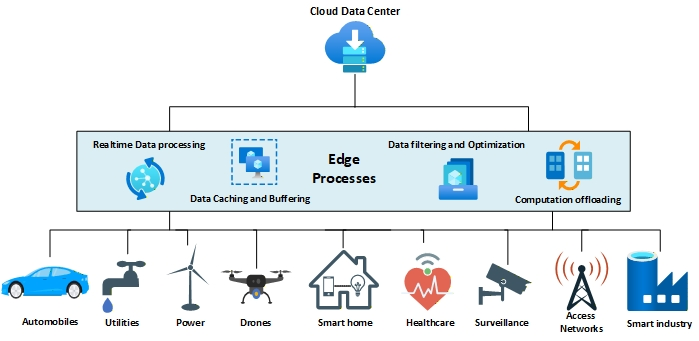

Journal Article
Denial of Service Attacks in Edge Computing Layers: Taxonomy, Vulnerabilities, Threats and Solutions
This paper presents a structured study of denial-of-service attacks across edge computing layers, highlighting attack taxonomy, security vulnerabilities, threat patterns, and available mitigation strategies.
DOI